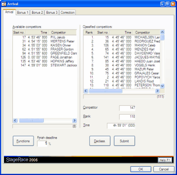

The arrival dialog for a half stage can be opened through in the menu, when the particular half stage is selected in the event tree.
It holds a number of tab sheets, depending on the configuration of the particular half stage.
The arrival dialog can have three types of tab sheet:

Arrival dialog